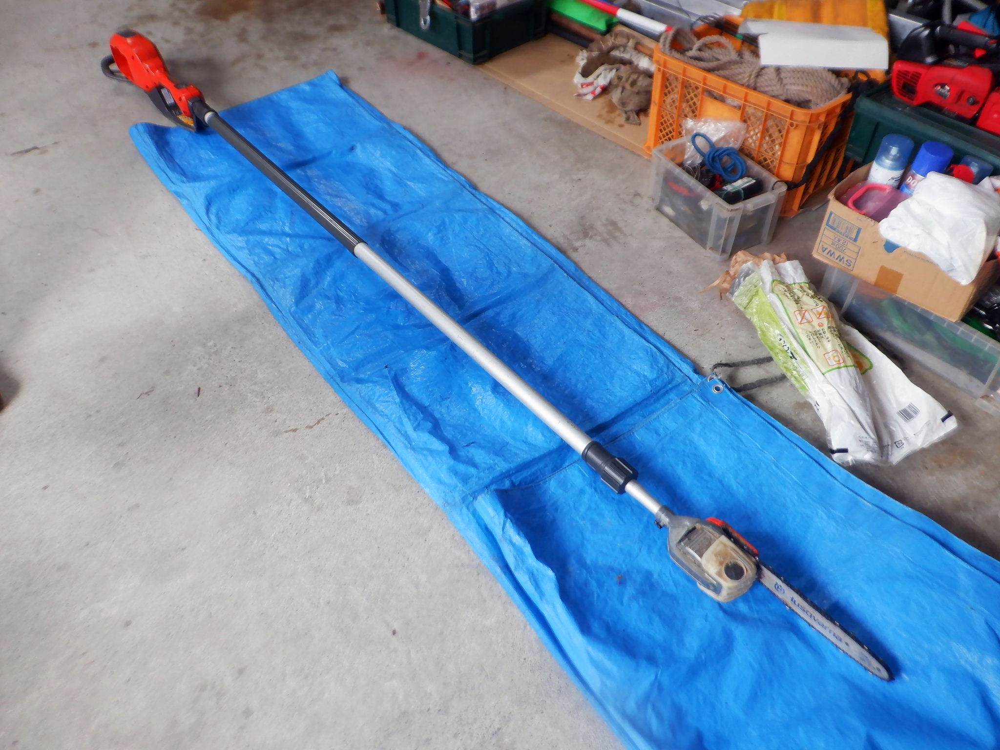

伸びるチェーンソー
写真04・名前と用途の確認

会社での呼び名
社内では「伸びるチェーンソー」と呼びます。
2026-10-30の写真番号別回答に基づく名称。操作・使用条件の確認とは別です。見分ける・覚える
- 用途：手の届かない枝を払う。
- 新人が覚えること：Husqvarnaのバッテリーを使う。長い柄の先にチェーン刃がある。
根拠を見る
社内聞取り・道具説明（2026-10-17確認）現物で確認すること
- 確認すること：本体型式、適合バッテリー型番、伸縮の固定と操作方法。
根拠を見る
社内聞取り・道具説明（2026-10-17確認）ナガノコとの見分け
- ナガノコは、長い柄の先にノコギリが付いた道具。会社の使い分けの説明では、伸びるチェーンソーより高い所に届く。伸びるチェーンソーはやや重いが、多くの枝を容易に払えるという説明。届く高さの数値や機種別の性能保証にはしない。